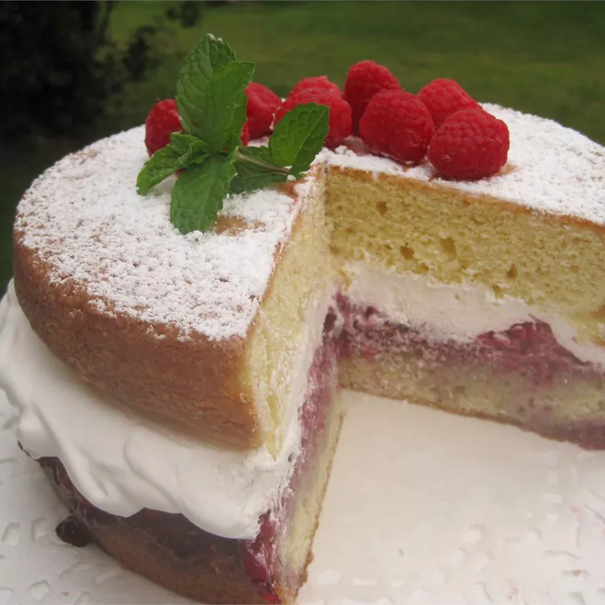

Victoria Sponge

Description
The Victoria sponge cake is a simple British dessert that lives up to its iconic
reputation. This light and tender Victoria sponge recipe is the perfect sweet treat to
brighten your day.
Ingredients
- baking spray
- all-purpose flour
- baking powder
- cornstarch
- kosher salt
- granulated sugar
- butter or margarine
- eggs
- vanilla extract
- whole milk
- strawberry or raspberry preserves
Steps
- Sift the dry ingredients together in one bowl and set aside.
- Beat the butter and sugar with a mixer, then beat in the eggs and vanilla.
- Mix in the flour mixture on low speed, alternating with the milk.
- Bake in the prepared cake pans until a toothpick comes out clean.
- Spread the preserves on the top of one cooled cake layer.
- Make the whipped cream, then spread over the preserves.
- Top with the remaining layer, duster with powdered sugar, and top with berries.